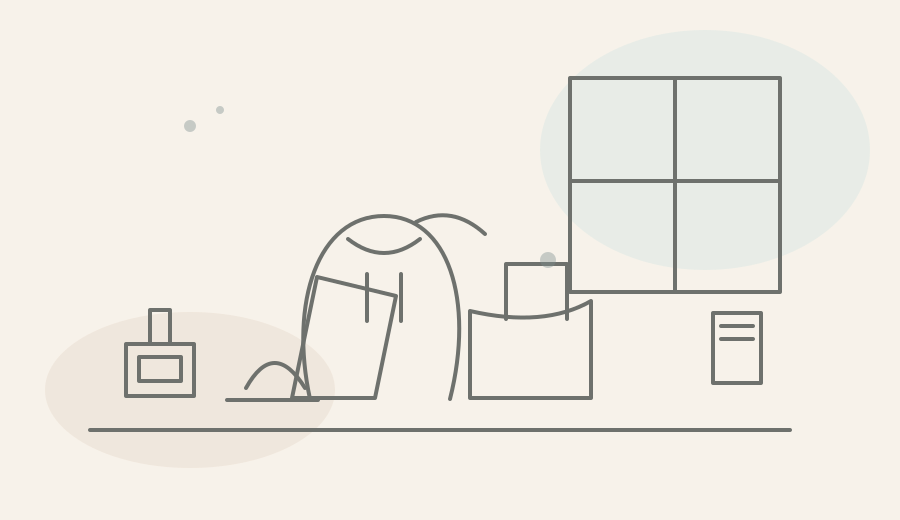
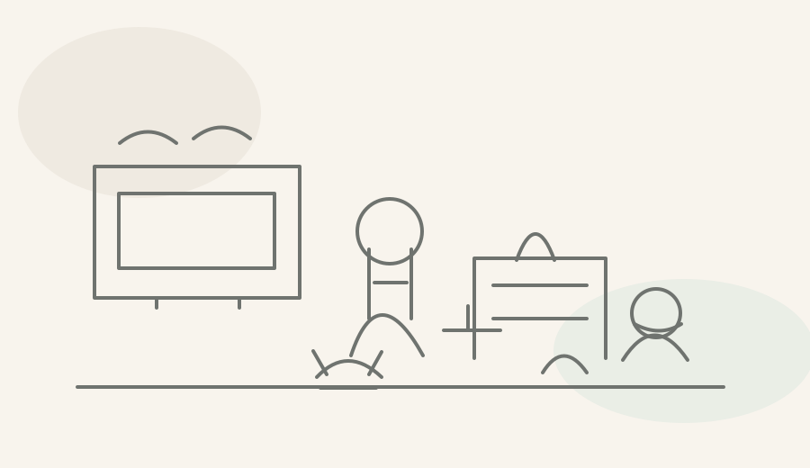
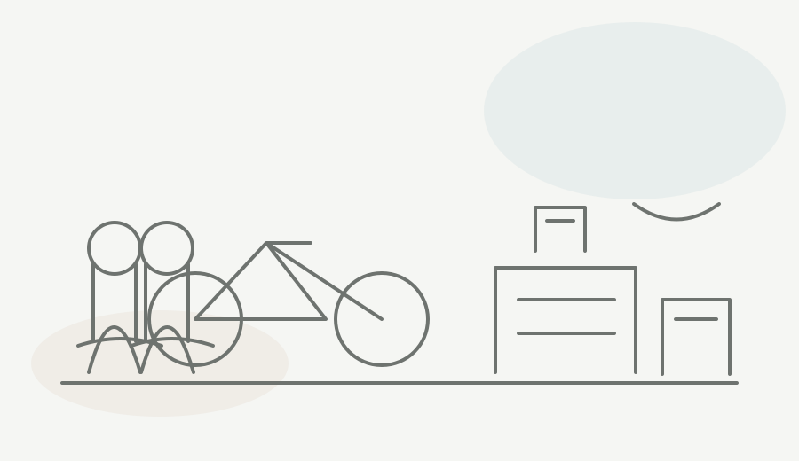
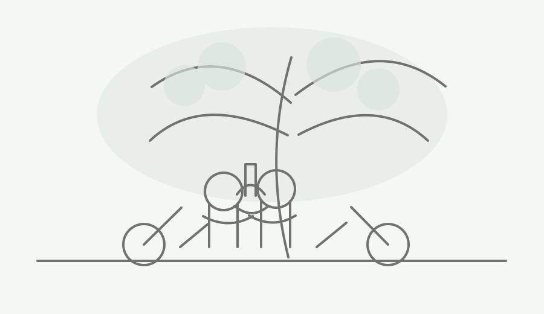
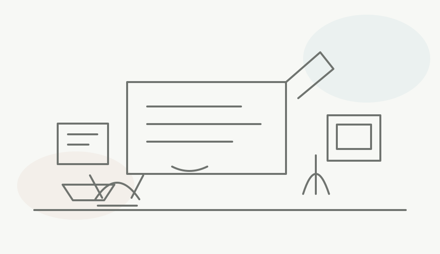

A quiet journey through memory
A Letter I Wish You Could Read
A Reflection Journey for the Person You Used to Be
There are things we understand only after we have already lived beyond them.
We look back at the person we used to be and notice fears that once felt enormous, ordinary days we rushed through, people whose presence seemed permanent, and versions of ourselves we did not yet know we would miss.
This is not an invitation to correct who you were.
It is simply a chance to sit beside that person for a while.
I · Remember
Remember
Before you knew what you know now.
Looking backward can make the past seem easier to understand than it ever felt while we were living through it.
We can see choices differently now. We know which fears passed, which relationships changed, which mistakes mattered less than we thought, and which moments quietly shaped us.
But the person you were did not have any of that hindsight.
They were living forward.
They were trying to make sense of life using only what they knew then.
Before deciding what they should have done differently, spend a moment remembering what it may have felt like to be them.
If you are not sure where to begin, you might think about:
- What were you most afraid would happen?
- What did you feel pressured to become?
- What did you wish someone understood about you?
- What did you hide because you did not have words for it yet?
- What dream, fear, or question seemed to take up more space than everything else?
A Question to Carry
What was that version of you carrying that makes more sense to you now?

II · Notice
Notice
The life you did not know you might miss.
Some memories announce themselves as important.
Others become precious much later.
A parent calling you from another room.
Someone making food while you did something else.
Friends waiting after school.
A sibling taking up too much space beside you.
A pet sleeping in the place they always chose.
A game you played until you knew every sound by heart.
A bicycle left outside.
Music through wired earphones.
A familiar television glowing in the evening.
An old phone, a school bag, a neighborhood street, a room that once seemed ordinary.
We rarely know which parts of life memory will decide to keep.
Sometimes what we miss most was happening quietly while we were looking forward to something else.
If you are not sure where to begin, you might think about:
- A sound that belonged to those years
- A meal, room, neighborhood, or routine you barely noticed then
- A parent, sibling, friend, or pet doing something completely ordinary
- A game, song, device, school item, or little ritual that instantly brings that time back
- A moment you never thought to photograph, but would gladly see once more
A Question to Carry
What ordinary part of that life became meaningful only after it changed?

III · Change
Change
Life rearranged itself anyway.
There were probably things you once believed would always remain exactly where they were.
A friendship.
A home.
A family routine.
The people you saw every day.
The future you pictured.
Perhaps even the person you thought you would become.
But life rarely asks us which parts we are ready to outgrow.
Some childhood friends slowly became names we no longer say very often.
Some rooms belonged to us only for a season.
Some first loves became stories we carry differently now.
Some dreams changed shape.
Some fears never happened at all.
And completely unexpected things arrived instead.
Sometimes there was no dramatic goodbye.
One day simply became another until we realized something had quietly become part of the past.
If you are not sure where to begin, you might think about:
- A friendship that slowly became different
- A home, school, neighborhood, or routine you eventually left behind
- A first love or relationship that belonged to one particular season of your life
- A plan you were certain would happen differently
- Something you once feared that never came true
- Something you never expected that changed you instead
A Question to Carry
What did life change that your younger self could never have prepared for?
What changed inside you because of it?

IV · Thank
Thank
For what they carried this far.
Looking back can easily turn into a list of advice.
Worry less.
Choose differently.
Leave sooner.
Stay longer.
Notice more.
But perhaps your younger self does not only need advice from you.
Perhaps there are things you owe them too.
They lived through days you now summarize in a sentence.
They made decisions before knowing how the story would unfold.
They loved people without knowing how long those people would remain.
They protected dreams you may have changed since then.
They made mistakes you later learned from.
They kept moving through moments when they could not yet imagine the person reading this page now.
Perhaps they carried more of your life forward than you usually give them credit for.
If you are not sure where to begin, you might think about:
- A time they continued without knowing where things were leading
- A mistake that eventually taught you something
- A person they loved sincerely
- A curiosity, dream, habit, or value they protected
- Something difficult they carried before you understood how difficult it really was
- A small part of them that you are grateful still lives in you
A Question to Carry
What would you thank that version of yourself for carrying this far?
What did they do for you without ever knowing who you would become?

V · Write
Write
What would you send back?
Maybe after all of this, you would still want to warn them.
Maybe you would apologize.
Maybe you would tell them to stay a little longer in an ordinary afternoon.
Maybe you would ask them to call someone, forgive themselves, take the photograph, play the game one more time, listen more closely, worry less about becoming impressive, or simply go outside before the sun disappears.
Or maybe you would not give advice at all.
Maybe you would just sit beside them.
If you are not sure where to begin, you might think about:
- Something you want them to stop blaming themselves for
- Something you wish they had appreciated while it was still ordinary
- A fear you would sit beside rather than dismiss
- A person or moment you would ask them to hold a little more gently
- Something you would thank them for
- One truth you would want them to hear without needing them to understand it immediately
A Question to Carry
If you could send one letter backward through all those years, what would you want that person to hear from you now?
Dear younger me...
I know you were afraid of...
I wish you could see...
I am sorry you had to...
Thank you for...
You do not know this yet, but...
Take the Letter With You
You do not have to write it here.
Copy these beginnings somewhere that already feels private enough for you, and let the rest of the letter become yours.
Paste them into Notes, a private document, a paper journal, or wherever you prefer to write.
Your words stay with you. Cozy Reflection Daily does not collect what you write.

Before You Leave This Version of Yourself
Perhaps the point was never to return and rescue the person you used to be.
You cannot warn them about every goodbye.
You cannot ask them to hold every ordinary afternoon more carefully.
You cannot tell them exactly which friendships will change, which fears will fade, which plans will fall apart, or which unexpected moments will someday become precious.
And perhaps they would not understand you if you could.
They were still becoming someone you now know from the other side.
But looking backward may offer something other than a chance to give advice.
It may give you a chance to notice that the person you sometimes judge for not knowing better was doing something much harder.
They were living forward without knowing what came next.
They carried questions whose answers you now take for granted.
They loved people without knowing how relationships might change.
They walked through ordinary days without knowing which ones memory would keep.
They said goodbye without always realizing it was a goodbye.
They worried about futures that never arrived.
They hoped for things that changed shape along the way.
And somehow, through choices you understand and choices you still do not, they carried a life far enough for you to be sitting here now.
What would you tell them?
What do you think they would want to tell you?
If the person you used to be could sit beside you for one quiet moment today, what do you think they would notice first?
What you have lost?
What you have survived?
What you have become?
The people who are still beside you?
Or something about you that, despite everything, is still quietly the same?
Maybe they would be surprised by what became difficult.
Maybe they would be relieved by what became easier.
Maybe they would ask about someone whose name they once said every day.
Maybe they would laugh at how seriously you both took something that eventually passed.
Maybe they would miss something you have stopped noticing.
Or perhaps they would look at you with the same uncertainty you are looking back at them with now.
Two versions of one life, each knowing things the other never could.
You do not have to decide what that means tonight.
You do not have to turn the past into wisdom.
You do not have to make every memory beautiful simply because it is gone.
You do not have to leave this page with a lesson.
Perhaps it is enough that, for a little while, you remembered.
You do not have to answer before you leave.
Some conversations with ourselves continue long after the page ends.